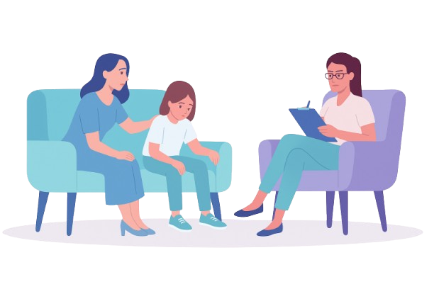

مرحبًا بك في “نُطقنا”… حيث يبدأ الفهم، وينمو التواصل
في عالم الطفل المصاب بالتوحد، كل إشارة هي رسالة، وكل تقدم هو إنجاز.
نحن هنا لنمشي معك خطوة بخطوة نحو إدراك أعمق واحتواء أكبر.
• لكل طفل طريقٌ فريد يستحق من يفهمه.
• لكل ولي أمر حق في الدعم والمعلومة الصحيحة.
• لكل أخصائي فرصة ليُحدث فرقًا حقيقيًا.
عبر منصتنا يمكنك:
• متابعة تطوّر طفلك يوميًا والتواصل مع الأخصائيين المختصين.
• الاستفادة من نصائح علمية موثوقة مخصصة لحالة طفلك.
• حجز مواعيد بسهولة مع نخبة من المتخصصين.
• الوصول إلى مكتبة من الفيديوهات التوعوية والجلسات التدريبية.
نُطقنا… منصة دعم، فهم، واحتواء.
